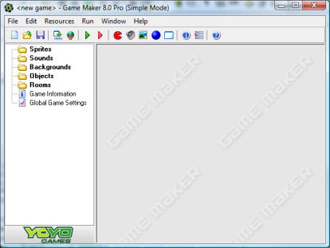

The global user interface
When you start Game Maker the following form is shown. Note that the
form might in reality also show some Game Maker news and the tutorial
might be visible at the right side.

(Actually, this is what you see when you run Game Maker in simple
mode. In advanced mode a number of additional items are shown.) At the
left, you see the different resources mentioned above: Sprites, Sounds,
Backgrounds, Objects, Rooms and two more: Game Information and Global Game
Settings. At the top there is the familiar menu and toolbar. In this
chapter we will describe briefly the various menu items, buttons, etc. In
the later chapters we discuss a number of them in detail. Note that many
things can be achieved in different ways: by choosing a command from the
menu, by clicking a button, or by right clicking on a resource.
File menu
In the file menu you can find some of the usual commands to load and save
files, plus a few special ones:
- New. Choose this command to start creating a new game. If
the current game was changed you are asked whether you want to save it.
There is also a toolbar button for this.
- Open. Opens a game file. Game Maker files have the
extension .gmk. You can also open old .gm6 files. (If you want to open .gmd files
created with version 5 of Game Maker you must select the appropriate
file type at the bottom of the dialog. These might though not
work correctly in the new version.) There is a toolbar button for this command. You can also
open a game by dragging the file into the Game Maker window.
- Recent Files. Use this submenu to reopen game files you
recently opened.
- Save. Saves the game design file under its current name. If
no name was specified before, you are asked for a new name. You can only
use this command when the file was changed. Again, there is a toolbar
button for this.
- Save As. Saves the game design file under a different name.
You are asked for a new name.
- Create Executable. Once your game is ready you will probably want
to give it to others to play. Using this command you can create a stand-
alone version of your game. This is simply an executable that you can
give to other people to run.
- Advanced Mode. When clicking on this command Game Maker
will switch between simple and advanced mode. In advanced mode
additional commands and resources are available.
- Exit. Probably obvious. Press this to exit Game Maker
. If you changed the current game you will be asked whether you want
to save it.
Edit menu
The edit menu contains a number of commands that relate to the currently
selected resource (object, sprite, sound, etc.). Depending on the type of
resource some of the commands may not be visible.
- Insert resource. Inserts a new instance of the currently
selected type of resource before the current one. A form will open in
which you can change the properties of the resource. This will be treated
in detail in the following chapters.
- Duplicate. Makes a copy of the current resource and adds it.
A form is opened in which you can change the resource.
- Delete. Deletes the currently selected resource (or group of
resources). Be careful. This cannot be undone. You will, though, be warned.
- Rename. Gives the resource a new name. This can also be done
in the property form for the resource. Also, you can select the resource
and then click on the name.
- Properties. Use this command to bring up the form to edit
the properties. Note that all the property forms appear within the main
form. You can edit many of them at the same time. You can also edit the
properties by double clicking on the resource.
Note that all these commands can also be given in a different way. Right-
click on a resource or resource group, and the appropriate pop-up menu
will appear.
Resources menu
In this menu, you can create new resources of each of the different types.
Note that for each of them there is also a button on the toolbar and a
keyboard shortcut. Also you can change the game information and the global
game settings.
Run menu
This menu is used to run the game. There are two ways to run a game.
- Run normally. Runs the game as it would normally run.
The game is run in the most efficient way and will look and act as in an executable game.
- Run in Debug mode. Runs the game in debug mode. In this mode
you can check certain aspects of the game and you can pause and step
through it. This is useful when something goes wrong but is a bit
advanced.
Once your game is finished, you can create a stand-alone executable of
the game using the command in the file menu.
Window menu
In this menu you find some of the usual commands to manage the different
property windows in the main form:
- Cascade. Cascade all the windows such that each of them is
partially visible.
- Arrange Icons. Arrange all the iconified property windows.
(Useful in particular when resizing the main form.)
- Close All. Close all the property windows, asking the user
whether or not to save the changes made.
Help menu
Here you find some commands to help you:
- Contents. Use this command to show this help file.
- Tutorials. Use this submenu to show the different tutorials that are provided with Game Maker
to teach you how to make your first games.
- Upgrade to Pro Edition. You can use this command to upgrade the Lite Edition
of Game Maker to the Pro Edition Online. The Pro Edition has
many aditional features.
- Enter Activation Code. If you purchased Game Maker before (and hence, have an
activation code or a previous purchase reference) you can use this command to enter your code.
You will be brought to a webpage where you can either enter
your activation code or your purchase reference from your previous payment.
- News. Here you can see the most recent news about Game Maker.
- Book. This command will bring you to
a location on the website where you can find information about the Game Maker book.
- More Tutorials. This command will bring you to
a location on the website where you can download some more tutorials.
- Website. Connects you to the Game Maker website
where you can find information about the most recent version of Game
Maker and collections of games and resources for Game Maker.
- Forum. This command will bring you to the forum where users
help each other with many aspects of Game Maker.
- Wiki. This command will bring you to the Game Maker wiki where
you can find plenty of information about the use of Game Maker.
- About Game Maker. Gives some short information about
this version of Game Maker.
The resource explorer
At the left of the main form you find the resource explorer. Here you
will see a tree-like view of all resources in your game. It works in the
same way as the Windows Explorer, and you are most likely familiar with
it. If an item has a + sign in front of it you can click on the sign to
see the resources inside it. By clicking on the - sign these disappear
again. You can change the name of a resource (except the top level ones) by
selecting it (with a single click) and then clicking on the name. Double
click on a resource to edit its properties. Use the right mouse button to
access the same commands as in the Edit menu.
You can change the order of the resources by clicking on them with the
mouse and holding the mouse button pressed. Now you can drag the resource
to the appropriate place. (Of course the place must be correct. You
cannot drag a sound into the list of sprites.)